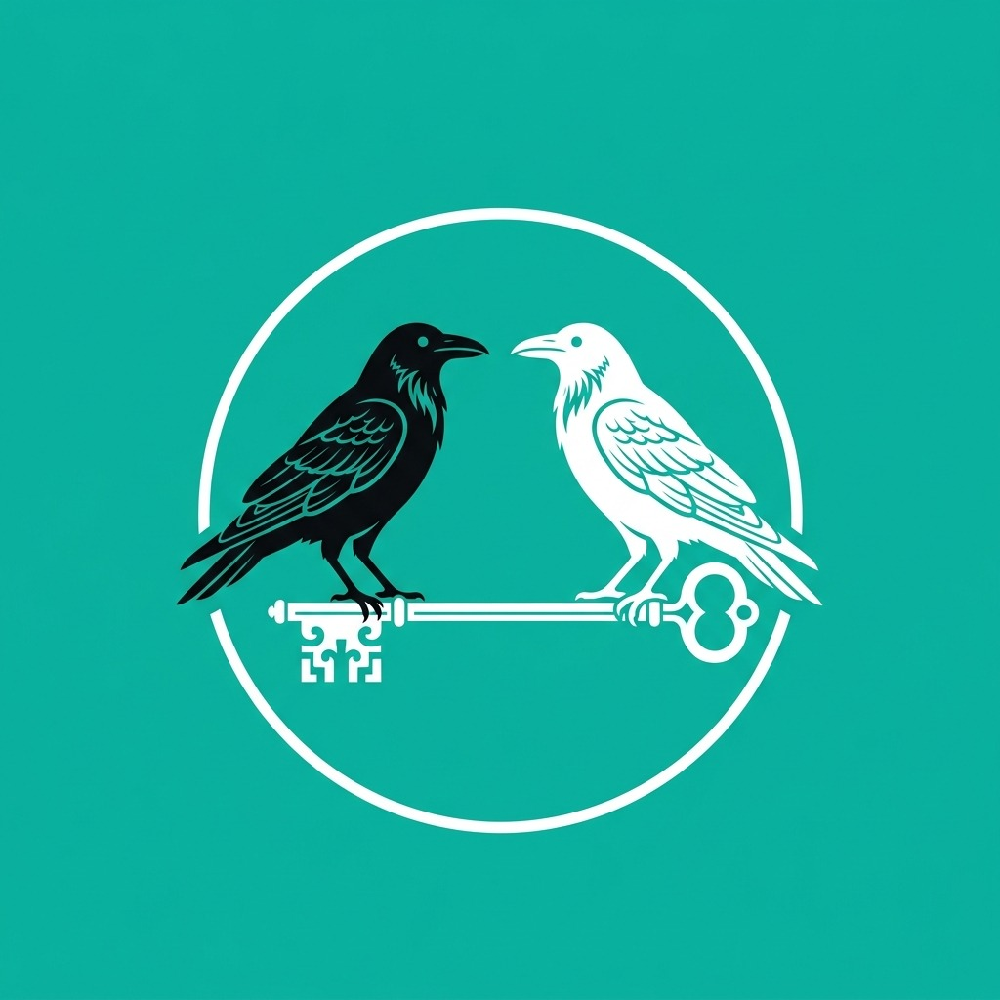
Descubre con Lúa es una aplicación para el móvil o la tableta de la persona adulta. Acompaña dos momentos: la asamblea de la escuela infantil y el rato de lengua en casa. Cada mes los dos trabajan el mismo tema, de manera que la criatura oye las mismas palabras en la escuela y en su casa.
Tiene dos partes, y cada una es para una persona distinta:
La criatura no usa la pantalla
No hay juegos, ni animaciones, ni recompensas para el niño o la niña. Lo que hay son guiones, lecturas y grabaciones para la persona adulta que está con ella. El aparato se queda fuera de su vista.
Es material educativo: no evalúa, no diagnostica, no puntúa a ninguna criatura y no emite ningún informe.
| Para quién | Maestras y maestros de escuela infantil, y familias |
|---|---|
| Edades | Primer ciclo (0-3 años) y segundo ciclo (3-6 años), cada uno con su contenido |
| Qué cubre | El curso entero: diez meses, de septiembre a junio |
| Lenguas | Gallego y castellano, intercambiables en cualquier pantalla. El inglés se escucha, no se lee |
| Conexión | Ninguna. Todo el contenido, grabaciones incluidas, va dentro de la aplicación |
| Cuentas | No hay. No se pide correo, ni nombre, ni fecha de nacimiento de nadie |
| Duración de una sesión | Entre ocho y diez minutos en el aula; tres minutos en casa |
Cada mes del curso tiene un tema: la bienvenida en septiembre, las hojas y el Magosto en otoño, el mar de la ría, la lluvia y las botas de agua, la primavera. De ese tema salen las dos cosas: lo que la maestra hace en la asamblea y lo que se propone a la familia para casa.
La aplicación no dirige la asamblea: la dirige la maestra. Cada fase se abre con una sola frase en letra grande —lo que hay que hacer— y con los minutos que se le suponen. La pantalla es el guion de la persona adulta, no el juguete del grupo.
La asamblea temática termina preparando la nota para las casas: lo que se hizo hoy, lo que se puede hacer en casa en tres minutos y la frase en inglés del mes. Se dice en la puerta o se copia en la entrada. Esa misma tarde la familia hace su parte, y cuando las dos coinciden en la misma semana el mes queda enlazado: esa coincidencia es todo el método.
El reloj no manda
Cada fase trae los minutos que se le suponen y un contador que arranca la maestra cuando el grupo está listo. No suena ninguna alarma y no pasa nada por pasarse: es una referencia, no un examen.
Al abrir la aplicación aparece Lúa, la gata, y un botón para entrar. Arriba, en todas las pantallas, está el selector GL / ES: se puede cambiar de lengua en cualquier momento sin perder el sitio.
Dentro hay tres puertas y un botón:
| Entrar en Modo Aula | La parte de la maestra: las asambleas del curso, por edad y por mes |
|---|---|
| Entrar en Academy | La parte de las familias: lecturas de tres minutos y la guía de inglés en casa |
| Ver Calendario Escuela · Hogar | Los diez meses del curso, con lo que toca en el aula y lo que toca en casa |
| Los premios de Lúa | El recorrido de la persona adulta que usa la app |
En la pantalla de arranque, debajo del botón, «Quién hace esto» abre los créditos: quién ha hecho la aplicación y con qué colabora.
Las dos primeras tarjetas llevan además una lectura de dos minutos — «Antes de entrar en el aula» y «Antes de empezar en casa»— con las seis cosas que conviene saber antes de usarla la primera vez.
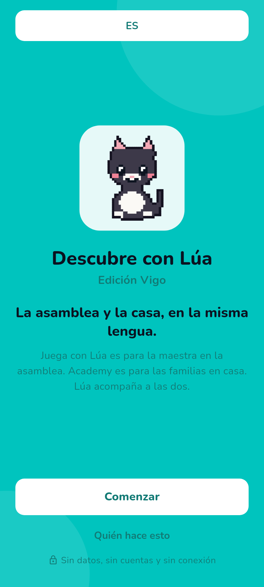
En cada pareja de imágenes, gallego a la izquierda y castellano a la derecha.
Se entra desde Entrar en Modo Aula. Arriba hay dos pestañas, 1.º Ciclo (0-3 años) y 2.º Ciclo (3-6 años), y cada una lleva a su propio contenido: no se mezclan.
Se elige el grupo —0-2 años, colo y contacto, o 2-3 años, movimiento en grupo— y el mes del curso. Con esas dos cosas aparece una sola tarjeta: la sesión de ese mes para ese grupo, con su título, el material que hace falta, la canción y sus cuatro fases con los minutos de cada una.
Comenzar la asamblea abre el guion. Una fase ocupa la pantalla entera, con la consigna en letra grande para leerla de lejos, y se pasa a la siguiente deslizando o con el botón. Las cuatro fases son siempre estas, y duran menos de nueve minutos en total:
| Fase | Qué se hace |
|---|---|
| 1 · Apertura y saludo | Reunir al grupo y saludar, uno a uno, con el material del mes |
| 2 · Enfoque y fingerplay | Un juego de dedos y manos que centra la atención |
| 3 · Núcleo TPR temático | El tema del mes, dicho por la maestra y hecho con el cuerpo: tres órdenes con el material, sin pedir que nadie repita |
| 4 · Calma y despedida | Bajar el ritmo y salir del círculo sin sobresaltos |
Debajo de la tarjeta están el calendario del curso y las unidades temáticas, que se explican a continuación.
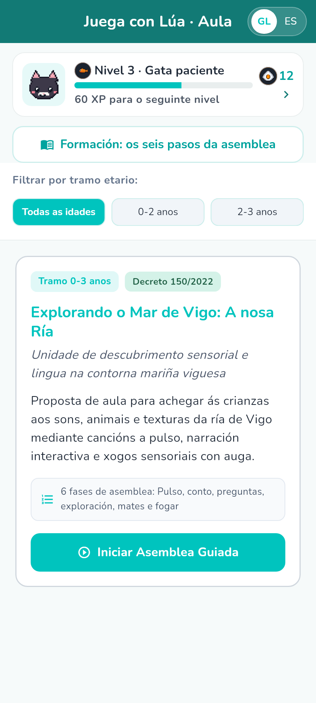
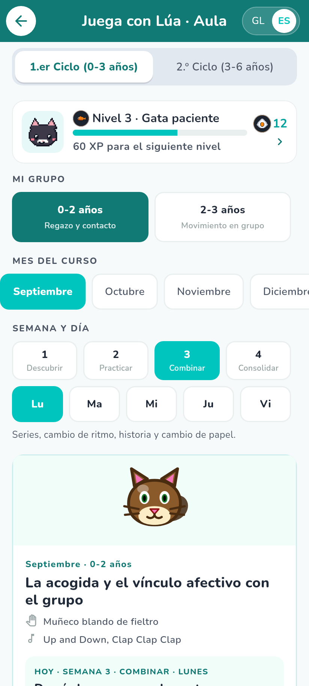
Hay diez unidades, una por cada mes del curso. Se abren desde las fichas que hay al final del aula y despliegan una asamblea más larga, de ocho minutos y seis fases: canción a pulso, cuento guiado, preguntas graduadas, exploración sensorial, matemáticas tempranas y puente a casa.
Cada unidad trae:
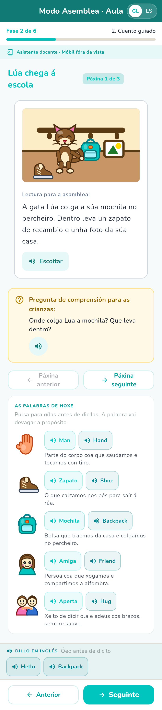
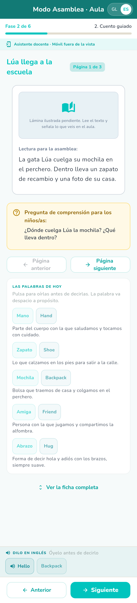
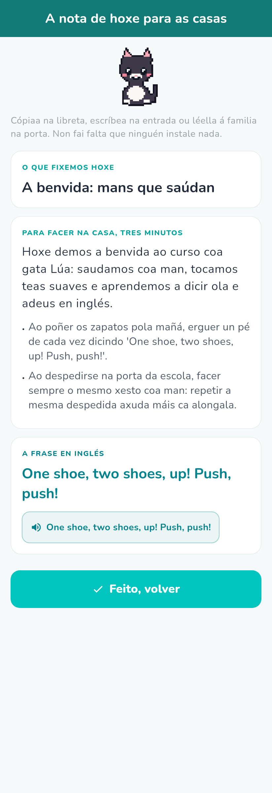
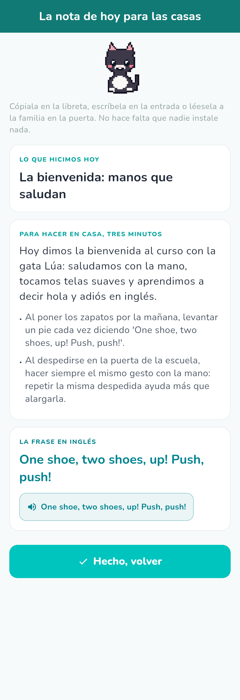
La pestaña 2.º Ciclo funciona igual, pero se elige clase en lugar de tramo de edad, porque a estas edades el mismo tema se trabaja de tres maneras distintas:
| 4.º de Infantil (3-4 años) | Acción expandida: la maestra dice y hace, y el grupo repite con el cuerpo |
|---|---|
| 5.º de Infantil (4-5 años) | Dramatizado, con paradas: la acción se congela y se retoma |
| 6.º de Infantil (5-6 años) | Entre iguales: las criaturas se dan las órdenes unas a otras |
Elegidos clase y mes, aparece la asamblea matinal de ese mes: diez minutos en cuatro fases —apertura y saludo, foco rítmico, reto temático en inglés, y calma y transición—. Cada fase trae su consigna escrita, su grabación y su contador.
El inglés no se pide: se hace
A la criatura no se le pide que diga nada en inglés, ni que repita, ni que traduzca. La orden se dice acompañada del gesto, y responder con el cuerpo ya es responder. Quien habla inglés en la asamblea es la persona adulta.
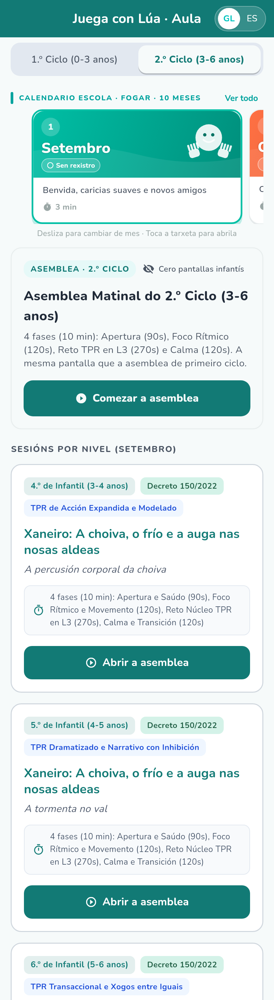
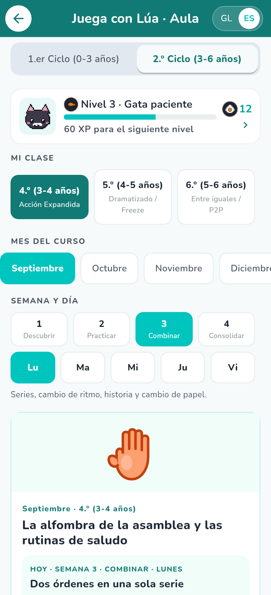
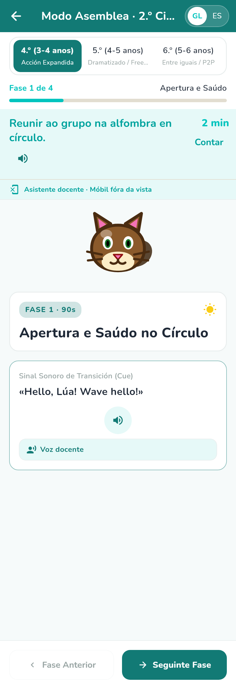
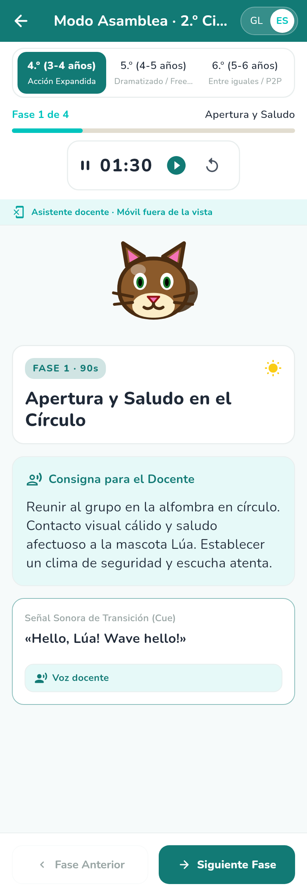
Es la pieza que mantiene el aula y la casa en el mismo sitio la misma semana. Tiene los diez meses del curso, de septiembre a junio, y dos lados que se conmutan arriba: Aula (docentes) y Hogar (familias).
Cada mes muestra:
Cada lado marca su día por separado: la maestra cuando dirige la asamblea, la familia cuando hace su juego de tres minutos. El calendario no guarda quién lo abrió ni de qué criatura se trata; solo sabe en qué mes del curso está.
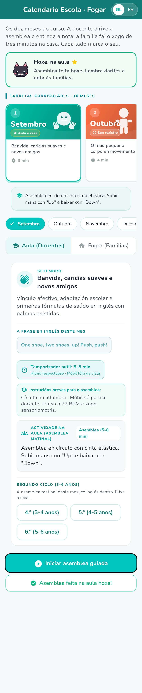
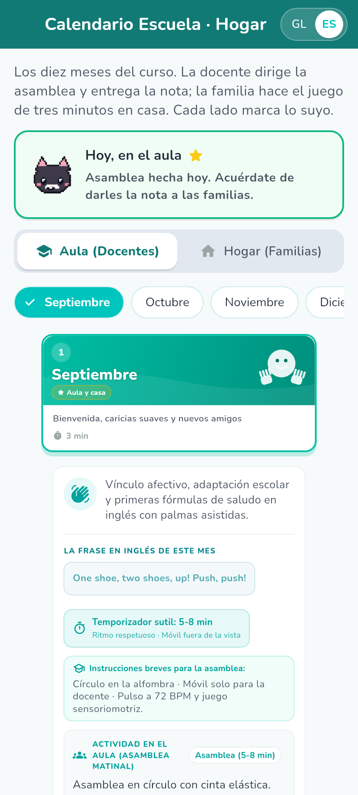
Academy es una lectura de adulto, pensada para tres minutos: al final del día, cuando la criatura ya duerme. No tiene nada que un niño quiera tocar.
Están agrupadas en cinco bloques:
Cada cápsula se lee pasando pantallas, y siempre tiene las mismas partes:
| La idea clave | La idea, en dos frases |
|---|---|
| Por qué importa | Qué hay detrás |
| Qué hacer en casa | Algo concreto para hoy |
| Ejemplo cotidiano | La misma idea dentro de una escena real |
| Lo que dice Lúa | El cierre, en una frase |
| Reflexión para la familia | Frases de verdadero o falso que se responden y se explican |
La reflexión no puntúa y no corrige: si la respuesta no es la esperada, explica por qué, y ahí acaba. No se guarda ni se envía a ningún sitio.
Es una guía por edades —0 a 6 meses, 6 a 12, 12 a 18, 18 a 24 y 24 a 36—. Para cada una dice cuánto dura el juego, en qué momento del día encaja, qué hacer con el cuerpo, qué evitar, y trae la frase en inglés con su grabación para oírla antes de decirla. Cierra con tres reglas para casa: una lengua en una rutina, entender viene mucho antes que hablar, y la app es para la persona adulta, no para la criatura.
Para las familias de 3 a 6 años hay además la micro-rutina de septiembre, tres minutos dentro de una rutina que ya existe, con una guía de cómo responder sin corregir: qué dice la criatura, qué conviene evitar, y cómo devolverle la frase entera sin cortar el juego. La regla de oro es esperar cinco segundos antes de ayudar.
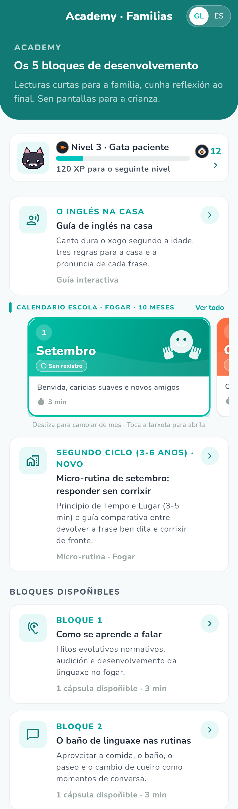
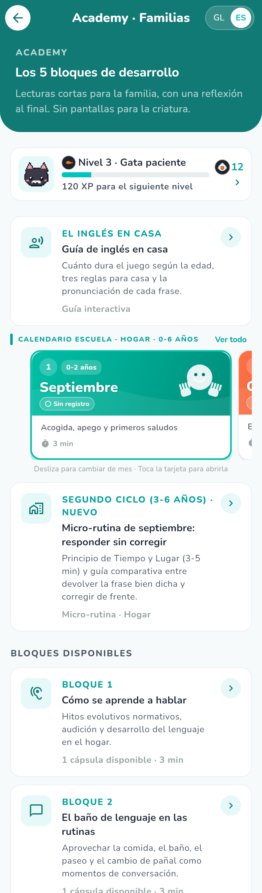
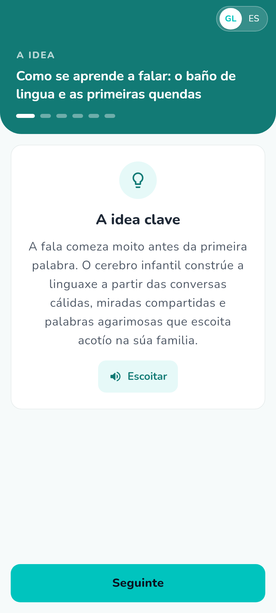
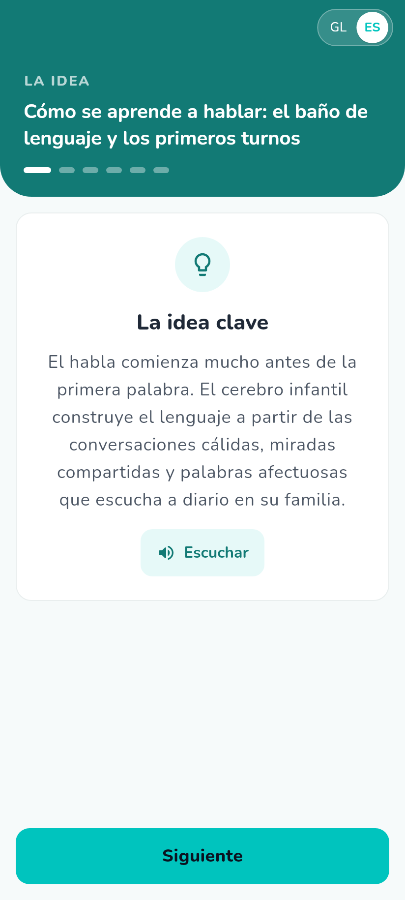
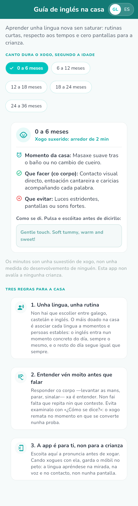
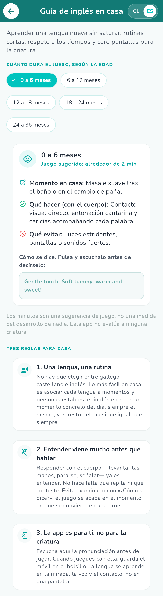
Gallego y castellano se cambian con el selector GL / ES de la barra superior, en cualquier pantalla y en cualquier momento. Cambian el texto y también la grabación que suena; no se pierde la fase en la que se esté.
El inglés es contenido, no un idioma de la aplicación. Ninguna pantalla se lee en inglés. Lo que hay son dos o tres palabras y una orden de cuerpo por sesión, con su grabación: se pulsa, se oye cómo se dice, y luego lo dice la persona adulta. No hace falta saber inglés para usarlo; hace falta oírlo antes. Las grabaciones van despacio a propósito.
Casi todo el texto largo lleva un botón de altavoz: la lectura del cuento y su pregunta, las consignas de cada fase, el aviso de seguridad, las partes de las cápsulas. En gallego habla una voz neuronal gallega, Celtia, del Proxecto Nós; en castellano, la voz Sharvard. Las grabaciones viajan dentro de la aplicación: no se descarga nada y no hace falta conexión.
Para qué sirve esto en gallego
Quien no creció hablando gallego puede oír cómo suena la frase antes de decirla delante del grupo. Ese es el uso para el que la app lleva una voz gallega.
El metrónomo de la canción es visual: unos círculos que se encienden al ritmo. La razón no es estética. Parte de las criaturas llevan audífono o implante coclear, y un metrónomo sonoro compite justo con la voz que tienen que seguir. El pulso se dibuja, y el oído queda entero para la letra.
La app lleva un recorrido de constancia con seis niveles, insignias y una racha de días seguidos. Hay dos recorridos separados, que se conmutan arriba: Maestra, que avanza con las asambleas dirigidas, y Familia, que avanza con las cápsulas leídas.
La racha cuenta días, no sesiones: dos asambleas la misma mañana son un día. Un día en blanco la rompe, y la mejor racha se recuerda.
Premian a la persona adulta, nunca a la criatura
Aquí no se mide el progreso de ningún niño ni de ninguna niña. La criatura no toca la pantalla, así que puntuar su «avance» sería inventarse un dato que nadie ha medido. Lo que se cuenta es el uso que hace el adulto de la app.
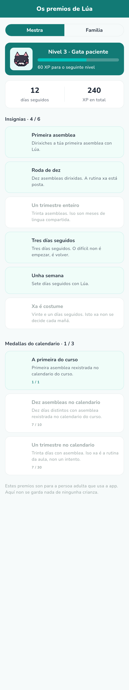
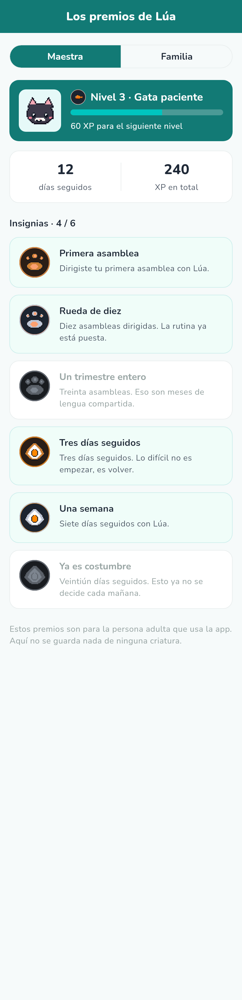
La aplicación no puede conectarse a internet: no lleva permiso para hacerlo. Todo —textos, dibujos y grabaciones— va dentro del paquete que se instala.
No hay cuentas ni registro. No se pide correo, ni nombre, ni teléfono, ni fecha de nacimiento.
De ninguna criatura se guarda nada. Lo único que queda guardado en el aparato son los contadores de los premios de la persona adulta: asambleas dirigidas, cápsulas leídas, racha actual y mejor racha, la fecha del último día —sin la hora— y las insignias conseguidas. Eso vive en el almacenamiento privado de la app, no identifica a nadie y no puede salir del aparato, porque no hay por dónde. Al desinstalar la aplicación se va con ella.
La política de privacidad completa está publicada en frankbetances.github.io/Descubre-con-lua/privacy.html.
Dr. Frank Alberto Betances Reinoso
frank.alberto.betances.reinoso@gmail.com